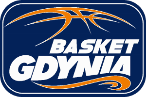

BASKET GDYNIA
Nasz gdyñski, ¿eñski klub koszykarski. Gdynianki nie raz pokaza³y, co potrafi±. 11 razy zdoby³y tytu³ mistrza Polski.
HISTORIA
Basket Gdynia (a do roku 2012 Lotos Gdynia) jest spadkobierc± tradycji Spójnii Gdañsk - klubu powsta³ego w 1946 roku. Prze³om lat sze¶ædziesi±tych i siedemdziesi±tych to okres najwiêkszych sukcesów Spójnii.
W po³owie 1992 roku przyszed³ jednak kryzys. Dru¿yna koszykarek zosta³a przekazana do klubu Ba³tyk Gdynia. Jednak po krótkim czasie dziewczyny wybi³y siê z do³ka. Z roku na rok zespó³ gra z najlepszymi zespo³ami Europy coraz skuteczniej, zdobywaj±c bezcenne do¶wiadczenie i ogranie na miêdzynarodowej arenie. Sezon 2000/2001 by³ najlepszym w historii europejskich wystêpów klubu.
Dzi¶ zespó³ jest jednym z najlepszych.
Strona g³ówna Basket Gdynia
